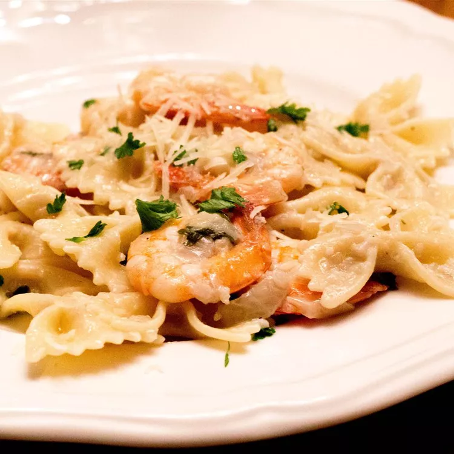

Ultimate Shrimp Scampi
This delicious ultimate shrimp scampi recipe will melt in your mouth. The addition of avocado and Asiago cheese takes it to the next level!

Ingredients
- 1 (16 ounce) package angel hair pasta
- 1/2 cup butter
- 1/2 cup minced onion
- 1/2 cup lemon juice
- 4 cloves garlic, minced
- 1 tablespoon chopped fresh parsley
- 1 teaspoon dry white wine
- 1 teaspoon salt
- 1/2 teaspoon black pepper
- 1 dash Worcestershire sauce
- 1 pound peeled and deveined medium shrimp
- 1/2 cup Asiago cheese, diced
- 1 large avocado-peeled, pitted and diced
Directions
- Bring a large pot of lightly salted water to a boil. Cook pasta in boiling water until tender yet firm to the bite, 2 to 3 minutes; drain.
- Melt butter in a large skillet over medium heat. Add onion, lemon juice, garlic, parsley, white wine, salt, pepper, and Worcestershire sauce; cook and stir until mixture bubbles. Increase heat to medium-high and stir in shrimp. Cook and stir until shrimp turn pink and opaque, about 5 minutes.
- Serve shrimp scampi over pasta. Sprinkle with Asiago cheese and avocado to serve.